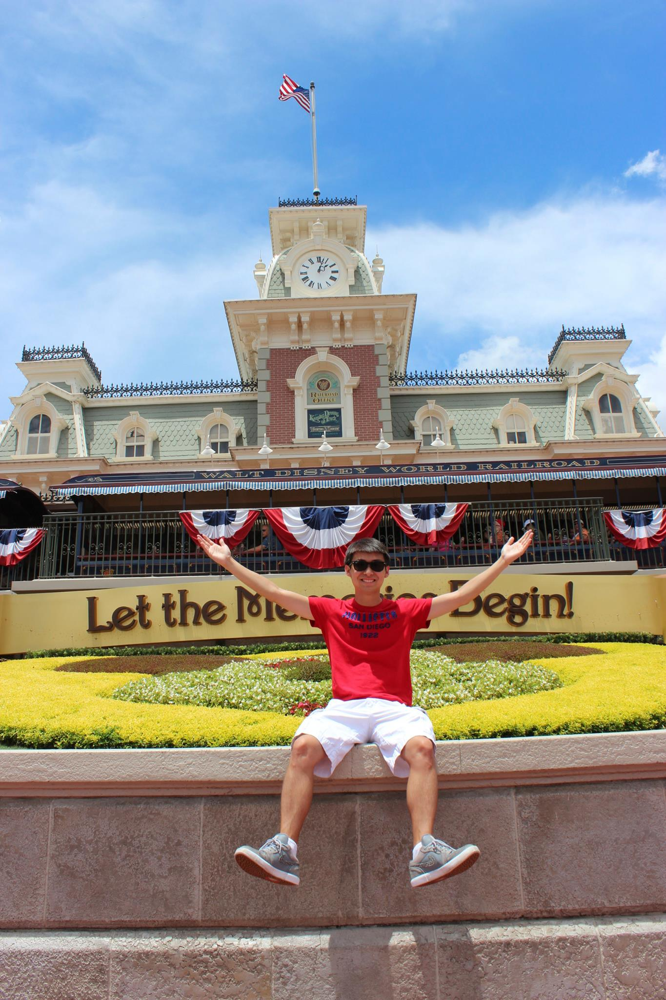
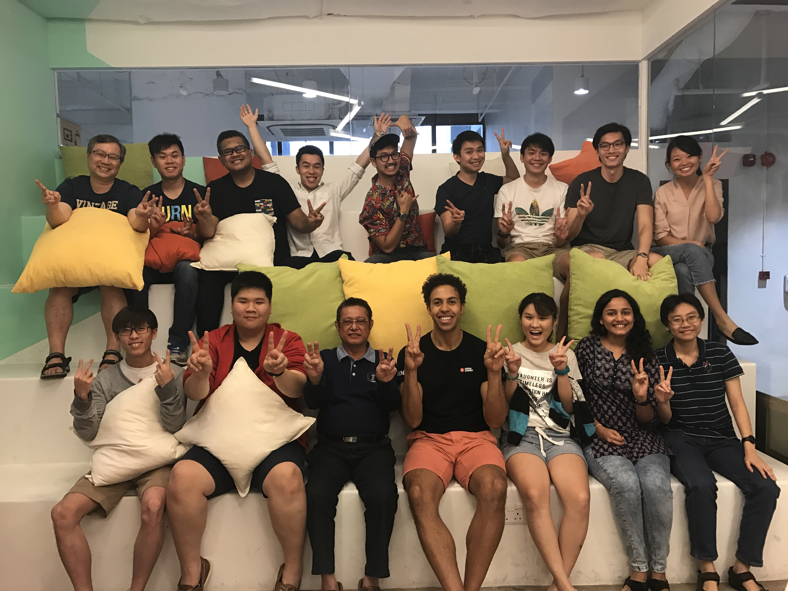

Graduated from Drexel University in 2015, majoring in Marketing.
Before becoming a programmer, my experiences revolved around sales. This would range from being a sales engineer to being a recruiter. I've been a part of the technology, banking and finance industry which ultimately led me to my decision to attend General Assembly's Web Development Immersive.
Past Experience

I graduated in June of 2015 at Drexel University with a degree in Marketing. Having an in depth experience in the sales technology industry mainly focused on database infrastructure. Interested in doing any sales position with established technology firms or start-up companies in San Francisco Bay Area, though not limited to San Francisco.
Prior to graduation, I worked with U-Combinations Technology in Wayne, Pennsylvania focused on sales consulting as well as well as selling to clients’ around Central Philadelphia ranging from Chartered Schools, Factories, Restaurants, Financial Businesses and Juvenile Justice Centers. Some of the products that I sold and familiar with were Virtualization Machine, IBM and Dell Servers, Point of Sale systems and network equipment.
Upon graduation, I returned back to California and worked in a company called "Upstart" which was a peer to peer lending company that help clients’ with their financing without solely depending on their credit score but also, by their school, area of study, academic performance and work history to achieve the best rate. During the first 3 months I held the position as a customer operations asssoicate followed shortly after by my new role as a credit analyst.
A year after graudation, I decided to move back to Singapore where I pursued a role as a recruiter in the banking industry. My area of focus was in product control and valuations as well as operations.
I am passionately driven by new innovative technology that is able to serve communities to promote a platform for new and existing businesses to strive upon. Andre enjoys meeting with new people to consult and listen to their needs to offer the best solution to meet their satisfaction.
Journey To GA
I've always been interested in technology. Be it whether it was hardware or software. My interests in coding came about during my time at Upstart. This was a startup company where their product was very new and was prone to have bugs. As a credit analyst and customer operations, I got to witness the bugs that occur in the product and report it to the engineers. In doing so, I got to see how the engineers solve the issues through code. Fast tracking to my move back to Singapore, I was searching for introduction classes for web development. I noticed that GA had a Web Development 101 as well as a Web Development Immersive course. I decided to give the Web Development 101 a try and found out that I really enjoy building something based from my own creativity. Few months later, I decided to take upon the challenge to leave my role as a recruiter and attend GA's Web Development Immersive course.


 For my final project at General Assembly, my group and I decided that we wanted to create a solution for food waste through grocery stores in Singapore. Often times, food would be thrown out not due to their quality but because of their appearance. This is where ugly foods comes in with the goal to help organizations purchase the produce with the lesser appearance whcih still provides the same nutrients and value as a perfectly looking produce. In addition, the public will be able to share articles and receipes that they have created with these produces.
For my final project at General Assembly, my group and I decided that we wanted to create a solution for food waste through grocery stores in Singapore. Often times, food would be thrown out not due to their quality but because of their appearance. This is where ugly foods comes in with the goal to help organizations purchase the produce with the lesser appearance whcih still provides the same nutrients and value as a perfectly looking produce. In addition, the public will be able to share articles and receipes that they have created with these produces.